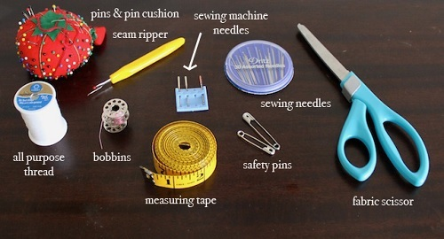
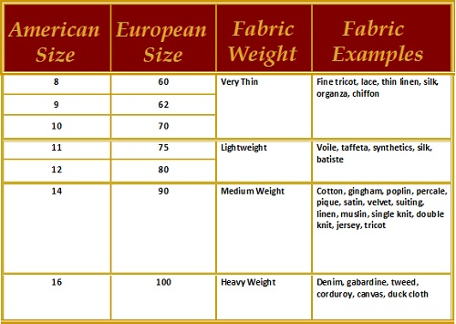

Featured Products

Green Apron
Size-Large
Perfect for your little baker!

Elsa Costume
Size-Medium
Inspired by the disney movie Frozen!


Sewing Tools
These are all tools you will need to begin sewing comfortably. There are many others out there that will make your life even easier but until you know you are going to persue this craft the money could be better spent elsewhere.

Scissors-
You need them to cut your fabric and also your thread. They are a little expensive initially but you won't regret it. They last nearly forever and can be sharpened with a wet stone. If you don't believe me on their importance go try to cut a ream of cloth with regular scissors.... A Warning: never use your scissors for anything other than fabric (or thread) any other materials and they will lose their sharpness rapidly.
Back to ImageNeedles-
You’ll need needles for sewing by hand and for any sewing machine. You can recognize the sewing machine ones because the eye is near the tip of the needle with the other end being flat, and the hand sewing kind has the eye on the opposite end of the shaft. They should also be labeled but you never know... Tip: use a specific kind of sewing machine needle for every type of fabric: there are denim needles, ballpoint needles for knits/stretch, double/triple needles; choose a proper size too, based on your fabric's thickness. Most needles come with a table like this to help you decide which needle to use. 
Back to ImageSafety Pins-
These come in really handy if you are using a live model. Pinning a shirt on a child and expecting it to stay or not stab them when you take it off is a fool's errand.
Back to ImageCloth Tape Measure-
A regular ruler or cutting mat might work for strait cuts but if you are trying to measure a cuff or waist you will be out of luck. Cloth measuring tapes are primarily on curvy lines (like circumferences and any body measure).
Back to ImageSeam Ripper-
This is your best friend, believe it or not! It's primary purpose is to cut seams, both wrong seams (think when you sew together the wrong sides of fabric) or existing seams on garments to be refashioned; you’ll find it useful to open your buttonholes, if you’ve made them with sewing machine. This has saved many a project for me.
Back to ImagePins and a pin cushion-
Pins are meant to keep fabric in place while cutting or sewing; you can buy the all metal kind or the ones with colored head Tip: pick the glass head ones versus the plastic head so they don't melt on your fabric the first time you press above them with your iron!There are different sized pins both in length and thickness, to start just choose the regular ones! To collect your pins, you can use a repurposed box/can/jar or create a nice pincushion with leftover material and filler.
Back to ImageThread-
You can’t sew without threads! The most used are cotton or polyester threads, but you can find also nylon and wooly nylon (used in sergers), metallic, silk, rayon… The other things to look at is the thickness of the thread; the most used is weight n°50, that means that 50 km of this thread weighs 1 Kg. Tip: Use the same thread kind on both spoon and bobbin, except when using embroidery thread or denim hem thread; this will minimize hazard of thread breaking!
Back to ImageBobbins-
Bobbins are included with your sewing machine and required to use your machine. A bobbin is a spindle or cylinder, that the thread is wound around and the machine then feeds up so that it can be looped with the lead thread. You can find replacement/additional bobbins at most craft stores. I like to have several around so that I can have lots of different threads ready to go.
Back to Top